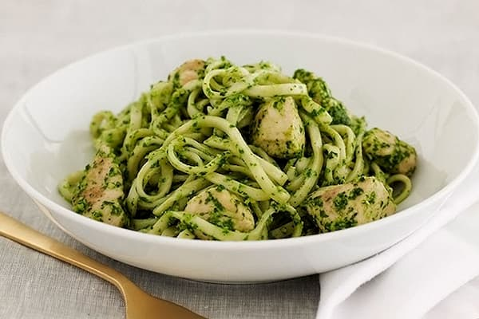

RECETA SPAGHETTI VERDE
El Espagueti Verde con pollo y chile poblano es una receta mexicana exquisita y picosita.
La combinación del pollo con espagueti verde hacen que esta receta tenga un sabor diferente
a las pasta preparadas tradicionalmente.

Si buscabas una manera para saber como hacer pechuga de pollo con espagueti verde,
en esta pagina te guiaremos paso a paso para que la puedas disfrutar.
UTENSILIOS
- Sarten
- Cuchara
- Plato
- Cuchillo
- Colador
INGREDIENTES
- 200 gramos de espagueti
- 2 chiles poblanos sin piel ni semilla
- Una pechuga de pollo
- 1 diente de ajo
- 200 mililitros de crema de leche
- 1 cucharada de aceite
- ½ cucharadita de Sal
- Tiempo de Preparación: 5 minutos
- Tiempo de Cocción: 20 minutos
- Calorías: 412 calorías por cada 100 gramos
¿CÓMO HACER ESPAGUETI VERDE CON POLLO?
- Primero, ponemos a calentar agua en una olla una vez comienza a hervir agregamos media cucharadita de sal y los espaguetis.
Los cocinamos según el tiempo indicado en el recipiente de la pasta.
- Mientras la pasta se cocina ponemos a tatemar o asar nuestros chiles poblanos. También cortaremos nuestra pechuga de pollo en trocitos pequeños.
Además quitaremos la piel y las semillas de los chiles para cortarlos en rajas.
- Luego, en una sartén pondremos a calentar una cucharada de aceite y un ajo picado, después añadiremos el pollo en trocitos y lo sazonamos con sal.
Lo tapamos y dejamos cocinar con su propio vapor.
- Mientras el pollo se cocina en una licuadora pondremos la crema de leche y las rajas de un chile poblano para licuarlo. A continuación
, en el sartén donde estamos cocinando el pollo, pondremos las rajas del otro chile poblano y revolvemos. Después hacemos un espacio en el centro y agregamos
- Por ultimo, abrimos un espacio en centro y adicionamos el espagueti para luego mezclarlo y verificar el sazonado.
- Finalmente, nuestra receta de espagueti verde con pechuga de pollo esta lista para servirse,
Otra combinación exquisita de esta receta es el espagueti verde con pollo y elote.
NOTAS
- Sazona con sal y pimienta al gusto. Ten cuidado con la sal, ya que el queso parmesano que agregarás a continuación también es salado.
- Sirve los espaguetis verdes en platos individuales y espolvorea con queso parmesano rallado al gusto.
- Si lo deseas, puedes decorar los platos con algunas hojas frescas de espinacas o albahaca para dar un toque final de color verde.
INFORMACIÓN NUTRIMENTAL
| Spaghetti Verde (porción típica de 100 gramos) |
| Calorias |
Grasa total |
Grasa saturada |
Carbohidratos |
Azucares |
Proteína |
| Aproximadamente 150 kcal |
Alrededor de 1 gramo |
Menos de 1 gramo |
Alrededor de 30 gramos |
Alrededor de 2 gramos |
Alrededor de 5 gramos |
¿QUIERES OTRA RECETA?, CONTACTANOS:
Ir a la pagina de administrador | Ir al inicio